Bienvenido
Turismo El Salvador App
Seleccione el departamento
Turismo El Salvador | 2014
Garita Palmera – Playa en Ahuachapán
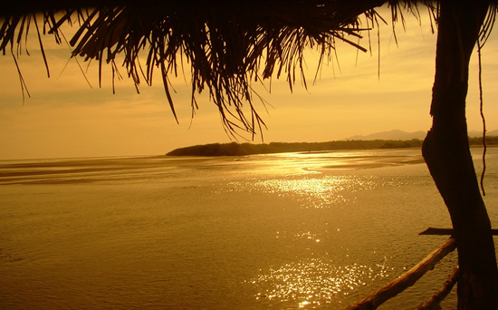
En el municipio de San Francisco Méndez se encuentra este bello paisaje de zona costera, la vida de la población es por medio de los recursos naturales del lugar, Garita palmera esta en el departamento de Ahuachapán.
Los origines de los pobladores son de nacionalidad Guatemalteca ya que emigraban para este lugar, es un refugio económico y de seguridad ya que en garita palmera la violencia es mínima.
Volver
En Donde Estoy
Turísmo El Salvador
Lago de Coatepeque-Santa Ana

Desde finales de la semana pasada el Lago de Coatepeque se tornó color azul turquesa, según las autoridades se debe a una especie de algas.
Por el momento las restricciones dictadas por Dirección de protección civil son evitar la pesca, bañarse, y consumo del agua procedente del lago.
Sin embargo los establecimientos turísticos permanecerán abiertos con regularidad, visitar el Lago de Coatepeque para observar un paisaje único como este.
El lago de Coatepeque, esta ubicado entre los municipios de Santa Ana, El Congo e Izalco y a unos 50 Kilómetros de San Salvador. Es una caldera volcánica, con una extensión aproximada de 6,500 Ha. De las cuales 2,500 corresponden al espejo de agua (unos 25 Km2 ) En la cuenca viven más de 20,000 personas, más un promedio de 5,000 turistas mensuales que visitan el lago.
Volver
Turísmo El Salvador
Playa de Acajutla-Sonsonate
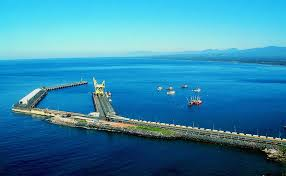
La ciudad y playa de Acajutla está situada a 20 kilómetros al sur de Sonsonate y a 85 kilómetros de San Salvador. En el muelle podrá conocer cómo limpian la pesca del día y comprar mariscos frescos o embarcarse para ir a pescar o bucear.
Dominando toda el área de Acajutla se encuentra el puerto del mismo nombre. Si bien el puerto y la zona urbana que lo rodea están dedicados casi por completo al comercio marítimo, hay en sus inmediaciones un gran número de atractivos como restaurantes que ofrecen lo mejor de la pesca diaria, además de establecimientos que ofrecen tours terrestres y en bote a las hermosas playas cercanas. Acajutla es también el principal destino de los barcos y cruceros turísticos que llegan a El Salvador.
Volver
Turísmo El Salvador
Joya de Ceren - La Libertad

Joya de Cerén es un sitio precolombino de El Salvador situado en las proximidades de San Juan Opico y Las Flores, en el departamento de La Libertad, en la región centroccidental de El Salvador. Estuvo habitado al menos desde el año 400 por un pueblo agrícola tributario de San Andrés y fue abandonado alrededor del año 600 a causa de la erupción de la Laguna Caldera. El sitio permite apreciar la vida cotidiana de un pueblo maya agricultor de hace 1.400 años (siglo VII), el único conocido en El Salvador
Es uno de los sitios arqueológicos más importantes de Mesoamérica porque muestra cómo era la vida de la gente común y corriente. Por eso se le llama a menudo la Pompeya de América, en comparación con el sitio arqueológico de Pompeya, localizado en Italia.
Volver
Turísmo El Salvador
Lago de Ilopango - San Salvador

El lago de Ilopango es un lago de origen volcánico en El Salvador. Mide 8 x 11 km, tiene una superficie de 72 km² y una profundidad de 230 m. Se sitúa a una altitud de 440 msnm a 16 km de la ciudad San Salvador, entre los departamentos de San Salvador, Cuscatlán y La Paz. Es el lago natural más grande de El Salvador. Sus aguas con abundante pesca de mojarras, guapotes y juilines y propio para la navegación a vela o en embarcaciones de motor.
La caldera de Ilopango se formó como resultado de una erupción cataclismica en el siglo 5 d. C., produciendo enormes flujos piroclásticos que destruyeron diferentes ciudades mayas. Esta erupcíón produjo aproximadamente 25 km³ de tefra (20 veces más que la erupción del Monte Santa Helena en 1980), y tiene un valor de 6 en el índice de explosividad volcánica.
Volver
Turísmo El Salvador
Suchitoto - Cuscatlán
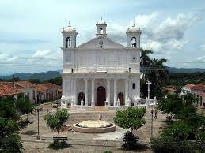
Suchitoto es un municipio del departamento de Cuscatlán, El Salvador. Su territorio ha sido habitado desde la época precolombina, y también fue el sitio donde se fundó la villa de San Salvador en 1528, que tuvo una breve existencia. A partir de la finalización de la guerra civil salvadoreña, la localidad ha prosperado hasta convertirse en uno de los más importantes sitios turísticos de este país. Según el censo oficial de 2007, tiene una población de 24.786 habitantes.
La población es de origen precolombino, y sus moradores pertenecían a la etnia nahua. Ya era un sitio densamente poblado a la llegada de los conquistadores españoles, quienes refundaron la villa de San Salvador a unos 12 km de este lugar por Diego de Alvarado en el valle de la Bermuda en abril de 1528, mediante disposición del Teniente de Gobernador y Capitán General don Jorge de Alvarado. La fundación original había tenido lugar en 1525 en un lugar no determinado.
Volver
Turísmo El Salvador
La Montañona - Chalatenango
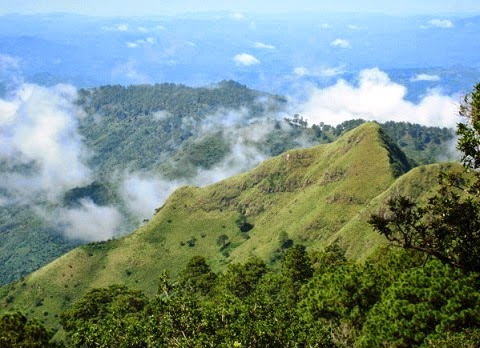
La Montañona es un macizo forestal y también un área natural protegida que se ubica a unos unos 1,700 metros de alturas obre el nivel del mar. Posee una extensión de al menos 2,700 manzanas repartidas entre los municipios de Las Vueltas, La Laguna, Comalapa, Concepción Quezaltepeque, Chalatenango, El Carrizal y Ojos de Agua, en el departamento de Chalatenango.
La Montañona es considerada como la mayor reserva ecológica del departamento de Chalatenango y una de las más importantes de El Salvador; por lo que su utilidad ecológica es mucha. En su territorio habitan unas 189 especies de animales y 133 especies de aves; la vegetación está compuesta por árboles de pino, encino, roble y liquidámbar entre otros. También destaca su importancia en recursos hídricos, ya que en este lugar nacen los ríos Tamulasco, Azambio y Motochico, los cuales sirven para abastecer de agua potable a gran parte de la zona baja y beneficiar de esa manera a más de 100,000 personas.
Volver
Turísmo El Salvador
Cerro Grande-Cabañas
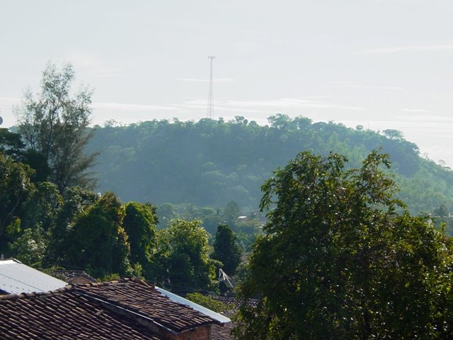
Sensuntepeque es una ciudad de El Salvador, cabecera del departamento de Cabañas, ubicada en la zona paracentral del país. Está situada a 83 km al noreste de la capital, San Salvador, y a una altitud de 820 msnm. Tiene una población de 35 mil habitantes, y una extensión territorial de 306,33 km². Está subdividido geográficamente en en 22 cantones y 236 caseríos en la zona rural. La zona urbana se divide en cuatro populosos barrios y 28 colonias.
Es una población cuyos orígenes se remontan a lejanos años de la época precolombina y, según confirma la toponímia regional, fue fundada por tribus lencas. Hacia fines del siglo XV, empero, guerreros yaquis o pipiles incursionaron por esta población y le cambiaron su nombre primitivo por el que aún ostenta, que es de genuina procedencia y estructura náhuat.
Sensuntepeque, vocablo corrupto de Centzuntepec, proviene de centzunt, cuatrocientos, término que se usa también como sinónimo de "muchos" y "grande" y que en la escritura jeroglífica era representado por una cabellera, una pluma o una espiga de maíz; y tepec, cerro, montaña, localidad. En consecuencia, Sensuntepeque significa "Cerro Grande", etimología que está de acuerdo con la antigua tradición que reputa "que primitivamente estuvo situado en la cima del Cerro Grande, que está al N. NE. de la población actual". (Santiago I.Barberena).
Algunos etimólogos traducen tal nombre por "cuatrocientos cerros" o "muchos cerros"; pero tal etimología es incorrecta, pues la lectura de los nombres geográficos indígenas debe comenzarse por la raíz desinencial, o sea, de derecha a izquierda. Si los yaquis o pipiles conquistadores, que se mezclaron con los lencas conquistados, hubieran querido llamar a tal lugar "muchos cerros" o "cuatrocientos cerros", habrían dicho Tepezunti o Tepecentzunti (y corrupto el vocablo por la fonética castellana, Tepezontes); pero nunca Sensuntepeque.
Volver
Turísmo El Salvador
Pozo de la Calabera-San Vicente

Ubicación : 30 minutos del casco Urbano en la vereda Vereda Cantarranas San Vicente de Chucurì Atractivos: Piscinas de Aguas Naturales, cascadas y cuevas, que facilitan la practica de deportes extremos y especial para los amantes de la espeleología Descripción: ubicado en el sitio conocido como la cuevas de los aviones de la quebrada la Platanala, allí podemos encontrar un hermoso manantial de aguas frescas que bajan de la montaña, donde se puede recibir cierto aire de ministerio y encanto, ya que la roca por donde el agua desciende, tiene la grotesca figura de una calavera, lo cual origina su nombre. Recomendación se hace necesario el acompañamiento de guías o personas que conozcan el sector y sistema de seguridad para descensos dado lo agreste y complicado de su topografía
Volver
Turísmo El Salvador
Isla Tasajera-La Paz
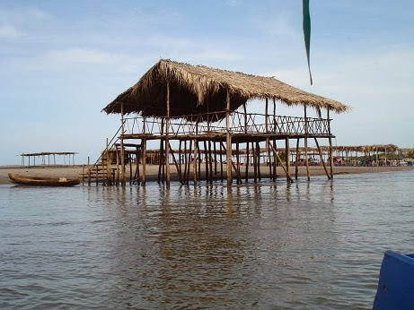
La Isla Tasajera está situada en el Estero de Jaltepeque, entre los departamentos de La Paz y San Vicente. Limita al Norte con el estero, al Sur con el Océano Pacífico, al Poniente con la Bocana de “El Cordoncillo” y al Oriente con la Bocana del Río Lempa.
Navegar por el Estero de Jaltepeque es toda una aventura. El sol radiante y las aguas tranquilas. En nuestro recorrido podemos apreciar los manglares que se levantan sobre el agua y alguno que otro pez que asoma su rostro a la superficie. Vamos camino a la Isla Tasajera , un bello rincón salvadoreño que alberga en su lecho amables lugareños y paisajes de ensueño.
A la isla hay dos formas de legar. Si usted toma un paquete ya preparado le pueden estar esperando en un parqueo privado que posee el Restaurante Oasis de Tasajera en el cual puede dejar su vehículo y embarcarse. La otra opción es pedirle a los lugareños que poseen lancha que le transporten hacia la isla. El precio se calculado en grupos de seis personas y se incrementa dependiendo del número de personas que se embarquen.
Volver
Turísmo El Salvador
El Bosque de Nancuchiname-Usulután
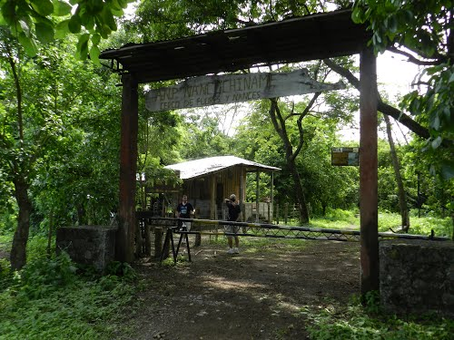
Este bosque están situado en 11 comunidades el Bajo lempa es un área natural protegida en el departamento de Usulután y tiene un aproximado de 797.305982 hectáreas de bosque.
Este es un bosque aluvial que significa que es nutrido por pequeñas inundaciones, sus árboles son frondosos y de raíces anchas. Los güiscoyoles son propios de la zona, los animales protegidos en este bosque son: los cusucos, los venados de cola blanca, los cocodrilos.
Este Bosque de Nancuchiname en verano es propicio visitarlo y realizar caminatas para ver las diferentes especies, pero en el invierno las veredas y sus caminos desaparecen y se convierte en una laguna con ramas de todos tipos. Los que cuidan el parque para invierno tiene que caminar sobre el agua que es llega a la cintura para realizar sus recorridos diarios.
Los jóvenes e la zona hacen trabajo de concientización en las escuelas para que se proteja el bosque. Cuando es invierno los animales deben buscar las zonas altas ya que las bajas se inundan, para la tormenta Agatha del 2010 el cusuco fue el más afectado en esta zona.
Volver
Turísmo El Salvador
Laguna de Aramuaca-San Miguel
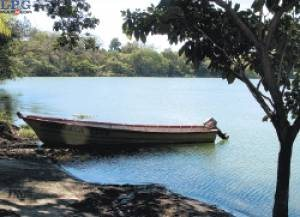
Situada a escasos kilómetros de la ciudad de San Miguel, la laguna de Aramuaca es uno de los sitios turísticos más pintorescos del departamento, no solo por su espejo de agua de intenso color verde, sino por las leyendas que giran en torno a ella.
Esta laguna, cuyo nombre significa peña de aguas y alacranes en náhuat, está ubicada en la jurisdicción de Uluazapa, a cuatro kilómetros al oriente de la ciudad de San Miguel.
Cerca de ella se encuentra un club y restaurante que cuenta con piscinas, área de juegos para niños y un embarcadero donde se pueden hacer viajes en lancha o contemplar los atardeceres que tienen como escenario principal el volcán Chaparrastique.
Uno de los mayores misterios que rodean la existencia de la laguna de Aramuaca es la reducción de su tamaño, pues antes de que el Chaparrastique hiciera erupción el 21 de septiembre de 1787 se supone que la laguna era más grande.
Y aunque no existen registros oficiales al respecto, se ha encontrado arenilla en los alrededores de la misma. Por eso se cree que la erupción del coloso migueleño absorbió agua de la laguna al estar en contacto directo con su respiradero.
Leyendas Otra de las historias que circulan en torno a las verdes y azufradas aguas es que por las noches se oyen cantos de sirenas y sonidos de guitarras.
Según la tradición popular de la zona, la música y los cantos desaparecen cuando la gente sale en busca de quienes los originan, burlándose éstos de la curiosidad de los humanos.
Hay quienes afirman que dentro de laguna existe un pueblo y aseguran que han escuchado cantos de gallos, ruidos de carretas y tañidos de campanas.
Algunos pobladores incluso anexan poderes mágicos a las verdes aguas de Aramuaca.
Volver16
Turísmo El Salvador
Cerro de Perkin-Morazan
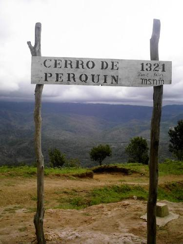
Durante la guerra, Perquin fue un pueblo que se negó a desaparecer a pesar de ser escenario de cruentos combates, bombardeos y mucha actividad bélica, desde ahí transmitía la radio Venceremos, cerca de ahí ocurrió la masacre de el Mozote, y hoy resurge usando su protagonismo durante nuestro conflicto armado como gancho para atraer turismo en lo que es llamado como "La Ruta de la Paz", para estas vacaciones decidímos ir a visitar el lugar y estar cerca de los lugares que fueron testigo de algunos de los momentos mas algidos del pasado conflicto.
Situado a poco mas de 200 kilometros de San Salvador,y a 1200 metros sobre el nivel del mar, perkín es un pequeño y fresco pueblo rodeado de pinares y bosques propios de las zonas altas, pero el acceso es fácil por carretera que está en muy buen estado, para llegar se toma la panamericana, en dirección a San Miguel y al llegar a la ciudad migueleña, se sigue hacia la izquierda, es decir que no se dirijan sobre la Roosevelt sino en dirección a Santa Rosa de Lima, jocoro, San Francisco Gotera, etc., antes de llegar a Jocoro está el desvío a San Francisco Gotera, luego se pasa de San Francisco y se toma el desvío que esta bastante bien señalizado, por lo que se comienza a subir y a subir pasando por varios pueblos y desvíos a otros lugares históricos hasta que se llega a Perkin.
Volver
Turísmo El Salvador
Golfo de Fonseca-La Union
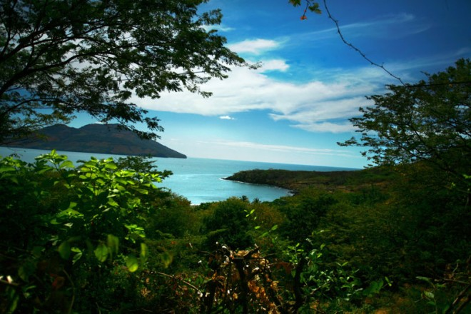
Se dice que el piloto mayor, Andrés Niño de la expedición del capitán Gil González de Avila, descubrió el golfete de Chorotega, al que luego se denominó Golfo de Fonseca a principios del año 1522 y en honor al obispo de Burgos y presidente del Consejo de Indias, Fray Juan Rodrigo de Fonseca.
En el seno del Golfo se localizaban varias islas entre las que mencionamos: Meanguera, Conchagüita, Punta Zacate o Zacatillo, Zacate Grande, Martín Pérez, El Tigre y otras islas mas pequeñas como Ilca, Garrobo y Violín entre
otras. Meanguera y Conchagüita eran habitadas por indígenas lencas o potones desde tiempos inmemoriales ellos habían creado asentamiento humanos como Teca y Conxagua o Comixagua en Comizahual, hoy conocida como Isla Conchagüita. La lengua que se hablaba era el lenca, las palabras “teca” significa “valle” y “coxagua” significa “tigre que vuela”. En el año de 1548 la isla Comizahual era habitada por 100 indios de la tribu lenca. Los frailes españoles construyeron una ermita en el pueblo de Teca, en honor a la Virgen de Santa Ana; y otra en Conxagua, dedicada a Santiago Apóstol.
En 1682 llegó una tropa de piratas ingleses al Golfo de Fonseca; se dice que estos causaron destrucción y muerte en los pueblos lencas de las islas, los habitantes fueron despojados de sus bienes, razón por la cual emigraron hacia el norte de Honduras y Amapala (Hoy ruinas de Pueblo Viejo) ubicado cerca de la punta de Chiquirín. A finales del siglo XVIII, Amapala era un caserío desprovisto de autoridades civiles, militares y religiosas; por lo que se ordenó que estos pobladores se trasladaran al embarcadero de Amapala que hoy es el Puerto de La Unión. Posteriormente las Islas volvieron a poblarse pero se desconoce la fecha. Actualmente el Consejo Nacional para la Cultura y El Arte (CONCULTURA) realiza nuevas investigaciones en la zona de las islas del Golfo de Fonseca para la preservación de los vestigios arqueológicos y precolombinos que se encuentran principalmente en Conchagüita “El arqueólogo de CONCULTURA define dichos sitios como concentraciones de materiales antiguos que tuvieron un uso humano” 1. los y en otras Islas del golfo como Zacatillo y en Meanguera que aún no han sido investigados, estos sitios arqueológicos que se consideran un patrimonio de la nación.
Volver
Turísmo El Salvador
Acerca de la Aplicación
Esta aplicacion y todo su contenido fue creada en su totalidad para fines educativos
Todos los derechos del contenido expuesto en esta aplicación es propiedad de las personas y/o entidades encargadas de su creación y publicación en la Red
Aplicación Diseñada y creada por:
Byron Oswaldo Chavarría Trejo
German Lenin Baires Romero
Josué Magin Zepeda García
Volver al Inicio
Turismo El Salvador
Contactenos
Contacto Directo
Byron Oswaldo Chavarría Trejo - cilop002@gmail.com
German Lenin Baires Romero - lenin.baires@hotmail.com
Josué Magin Zepeda García - aspactic@gmail.com
Volver al Inicio
Turismo El Salvador
Ahuachapan:
Volver al Mapa
Turismo El Salvador
Santa Ana:
Volver al Mapa
Turismo El Salvador
Sonsonate:
Volver al Mapa
Turismo El Salvador
La Libertad:
Volver al Mapa
Turismo El Salvador
San Salvador:
Volver al Mapa
Turismo El Salvador
Cuscatlán:
Volver al Mapa
Turismo El Salvador
Chalatenango:
Volver al Mapa
Turismo El Salvador
Cabañas:
Volver al Mapa
Turismo El Salvador
San Vicente:
Volver al Mapa
Turismo El Salvador
La Paz:
Volver al Mapa
Turismo El Salvador
Usulután:
Volver al Mapa
Turismo El Salvador
San Miguel:
Volver al Mapa
Turismo El Salvador
Morazán:
Volver al Mapa
Turismo El Salvador
La Unión:
Volver al Mapa
Turismo El Salvador
Ahuachapan
La Reserva Nacional Bosque El Imposible - Ahuachapan
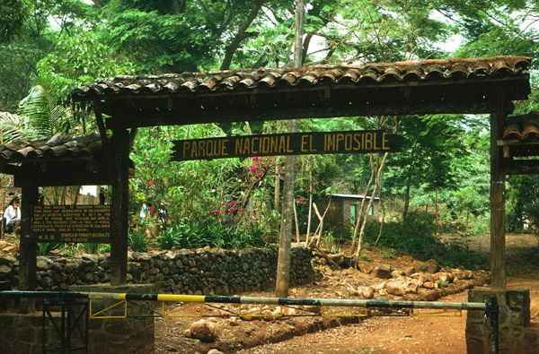
Lugares ecológicos tiene varios El Salvador uno de ellos es sin duda La Reserva Nacional Bosque El Imposible (o parque como quieras llamarlo).
Ubicado en el departamento de Ahuachapán en el accidente de nuestro país, entre dos municipios como lo son Tacuba y San Francisco Menéndez, justamente en la ruta de las flores pero sur oeste, en las cordilleras altas lo cual hace que el clima sea muy pero muy fresco.
Este parque tiene 4 mil hectáreas ya te puedes imaginar como es de grande, además esta a cargo de 25 guarda bosques, también cuenta con un buen grupo de guías turísticos que superan los 20, se estima que cuenta con mas cinco mil diferentes especies de plantas, unas 290 diferentes tipos de aves, mas de 5 mil mariposas, 100 especies de mamíferos.
El Imposible es considerado como el parque mas grande de todo El Salvador, esta información de puede servir como referencia para tomar en cuenta a la hora de visitar un lugar lleno de naturaleza, es visito por miles de personas cada año.
Volver
Ubicación
Turismo El Salvador
Santa Ana
Chalchuapa - Santa Ana
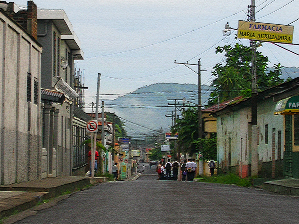
La ciudad de Chalchuapa está ubicada en un amplio valle a 1700 mts de altura y regado por el río Pampe, distante 15 kms al oeste de la ciudad de Santa Ana. Posee en su cercanía la piscina “El trapiche” de aguas frescas y transparentes, y el paraje de Casa Blanca que exhibe la imperecedera roca sobre la cual cayó mortalmente herido el reformado de Guatemala Gral. Justo Rufino Barrios, en la sangrienta batalla del 2 de abril de 1885. También posee una iglesia de mampostería, de puro estilo colonial, hermosa joya arquitectónica consagrada al patrón de la ciudad Santiago Apóstol, cuya representación lítica a caballo corona la cúpula del templo.
Chalchuapa que en idioma nahuat significa “Ríos de jadeitas”, fue el más notable emporium de la civilización de los pok´omames, pueblos de la familia Maya-Quiche o Mayance y constituye sin duda alguna la zona arqueológica más notable del país, con cinco centros ceremoniales: Tazumal, Pampe, El Trapiche, Casa Blanca y Las Victorias y además, la laguna de Cuzcachapa. Estos vestigios precolombinos se hallan diseminados en un área de 6 Kms. Cuadrados.
Las ruinas de Tazumal comprenden un montículo principal de 23 mts de altura (las estructuras inferiores están soterradas) emplazado en una manzana y formando dos pirámides truncadas al oeste. Tiene ocho pilastras con figuras incisas. Al norte hay otras y complejas construcciones y un patio de danza con gradería. El “juego de pelota” casi totalmente destruido, quedaba en terrenos del actual cementerio.
En el flanco occidental del Ku o Teocali, estaba el monolito tallado en roca basáltica llamado “Estela de Tazumal” de 2.65 mts de altura y 1.16 de ancho, que representa a un personaje ricamente ataviado, ostentando en los laterales inscripciones jeroglíficas posiblemente cronológicas, pero diferente a la clásica de la cultura Maya.
Volver
Turismo El Salvador